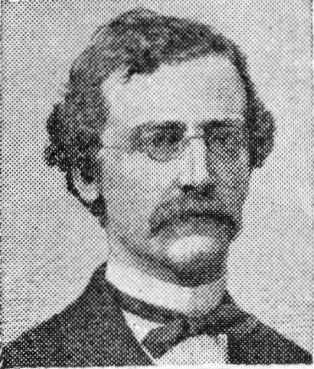

Carl August Walberg

Walberg, Carl August, filolog. Född i Sävestads socken i Skaraborgs län d. 14 dec. 1827. Föräldrar: d. v. komministern, sedermera kyrkoherden Sven Walberg och Sofia Lovisa Tegnæus. — 1847 student vid universitet i Uppsala, promoverades W. 1854 till fil. d:r. Kallad till docent i grekiska litteraturen i Uppsala 1856, befordrades han till Höijersk adjunkt i samma läroämne 1860 samt företog, efter att ha erhållit statens större resestipendium, i juli 1862 en utrikes resa till Tyskland, Grekland, Italien och Frankrike, hvarifrån han återkom till fäderneslandet 1863. 1865—66 deltog han som ledamot i kommittén för behandling af åtskilliga till språkundervisningen inom läroverken hörande frågor, befordrades 1869 till professor i grekiska språket och litteraturen vid universitetet i Lund och var 1870—72 ledamot af kommittén, som hade att föreslå förändringar i gällande läroverksstadga. Under sin vistelse i Uppsala hade han i uppdrag att meddela undervisning i pedagogik åt dem, som beredde sig för lärarekallet, och deltog både som adjunkt i Uppsala och professor i Lund verksamt i granskningen af bibelkommissionens öfversättning af nya testamentets böcker. Död i Lund d. 14 oktober 1874. — Ehuru ej synnerligen produktiv som skriftställare, hade han likväl vid sin bortgång redan vunnit ett namn i utlandet, hvars filologer skattade hans upplaga af Euripides' Electra, 1869, mycket högt. W. utarbetade äfven i förening med C. V. Linder ett Svenskt-grekiskt lexikon 1862. Genom sin undervisning och hela behandling af den vetenskap, för hvilken han var målsman, bidrog han väsentligt att leda de klassiska studierna i vårt land i en bättre riktning och gifva deras idkare en högre uppfattning af deras betydelse, än förut var förhållandet. — Gift 1871 med Klara Elisabet Olde.
Ur Svenskt biografiskt handlexikon, 2 uppl. (1906), bd 2, s. 680, efter faksimilet hos Project Runeberg.